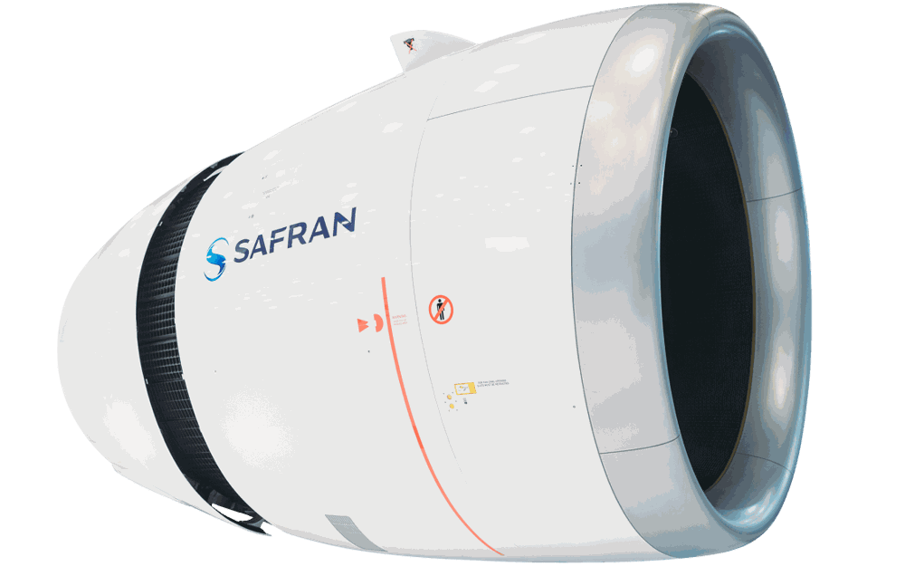

Réindustrialisation de l'A330 Neo
Revoir la façon de fabriquer les pièces de la nacelle - l'enveloppe qui entoure le réacteur - de l'Airbus A330 Neo. Un projet d'études réalisé en conditions réelles, sur le site de production de COAERO.
Contexte
Une centaine de pièces de nacelle, un prix devenu difficile à tenir
COAERO fabriquait une centaine de pièces différentes pour la nacelle du moteur Rolls-Royce Trent 700, celui qui équipe l'Airbus A330neo. La nacelle est l'enveloppe qui entoure le réacteur ; les pièces en question sont surtout des tôles qui protègent la structure de l'avion de la chaleur du moteur. Le client, Safran Nacelles, était le plus important de l'entreprise.
Le contrat prévoyait une baisse progressive des prix, devenue difficile à tenir sans faire évoluer les moyens de production. Un nouvel accord a été trouvé : Safran Nacelles finance de nouveaux outillages, en échange d'une montée en cadence et d'une baisse des coûts de fabrication. C'est ce chantier qui m'a été confié pour mon projet de 2ᵉ année.

Cahier des charges
Ce qui était attendu
- Réduire les temps de chaudronnerie - la mise en forme des tôles à la main, l'étape la plus longue et la plus coûteuse du process - avec pour cible le « zéro chaudronnerie ».
- Respecter le budget de 50 600 € accordé par le client pour concevoir et fabriquer les nouveaux outillages.
- Améliorer la productivité et la répétabilité : obtenir des pièces identiques d'une fabrication à l'autre.
- Faire valider chaque nouveau process par le client au travers d'un DVI (Dossier de Validation Industrielle), obligatoire dans l'aéronautique.
- Tenir le planning : étude en septembre 2025, conception jusqu'en avril 2026, fin du projet en juillet 2026.
Ce que j'ai fait
De l'analyse des références à la validation du nouveau process par le client
références retenues après analyse terrain
de budget outillages piloté
de projet
J'ai sélectionné les références
Avec les responsables technique, commercial et atelier, j'ai classé les références selon leurs temps de chaudronnerie et de réglage et leur complexité. Une cinquantaine ont été retenues au départ.
Je suis allé sur le terrain
J'ai recueilli l'avis des chaudronniers et des opérateurs de presse. Leurs retours m'ont permis de choisir des solutions réalistes et d'écarter les références qui ne justifiaient pas de réindustrialisation : 35 au final.
J'ai conçu les outillages
Sur CATIA V5, j'ai conçu les outillages d'emboutissage - la mise en forme de la tôle entre un poinçon et une matrice - puis les plans de définition nécessaires à leur usinage.
J'ai sous-traité les cas complexes
Pour les géométries les plus complexes, j'ai monté un dossier de sous-traitance afin d'obtenir une simulation numérique d'emboutissage : un calcul qui prédit comment la tôle va se déformer, et que l'entreprise ne pouvait pas réaliser en interne.
J'ai géré les achats d'outils
J'ai identifié les outils de pliage manquants, validé le choix avec les opérateurs concernés, obtenu le devis du fournisseur et transmis la commande au service achats.
J'ai écrit les gammes
Sur TopSolid'ERP, j'ai rédigé les gammes MAP (mise au point), qui servent à valider le nouveau process en interne, puis les gammes définitives, et j'ai chiffré le temps gagné par rapport à l'ancienne méthode.
Et après
Vers le « zéro chaudronnerie »
Cette logique du « zéro chaudronnerie », inspirée des méthodes du secteur automobile, pouvait être étendue à d'autres programmes de l'entreprise. Elle pose aussi une question que ce projet m'a appris à ne pas écarter : supprimer des opérations manuelles, c'est aussi faire disparaître le savoir-faire des chaudronniers, ce qui suppose d'organiser sa transmission.
Envie d'en savoir plus ?
Découvrez mes autres réalisations, ou contactez-moi directement.